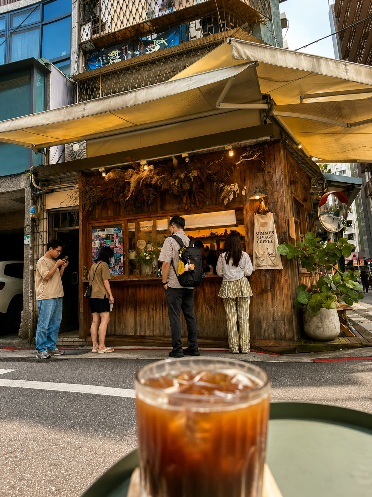
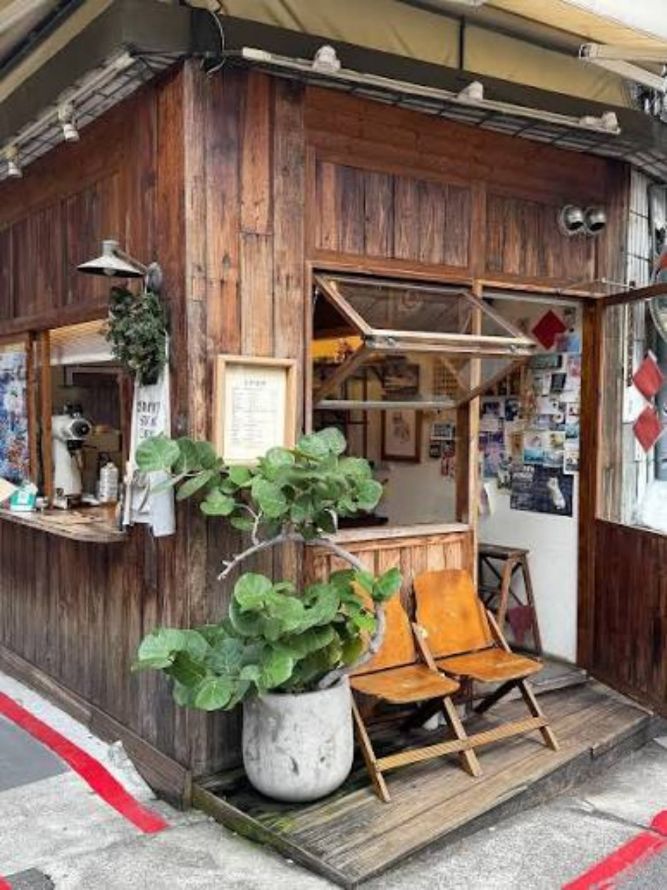
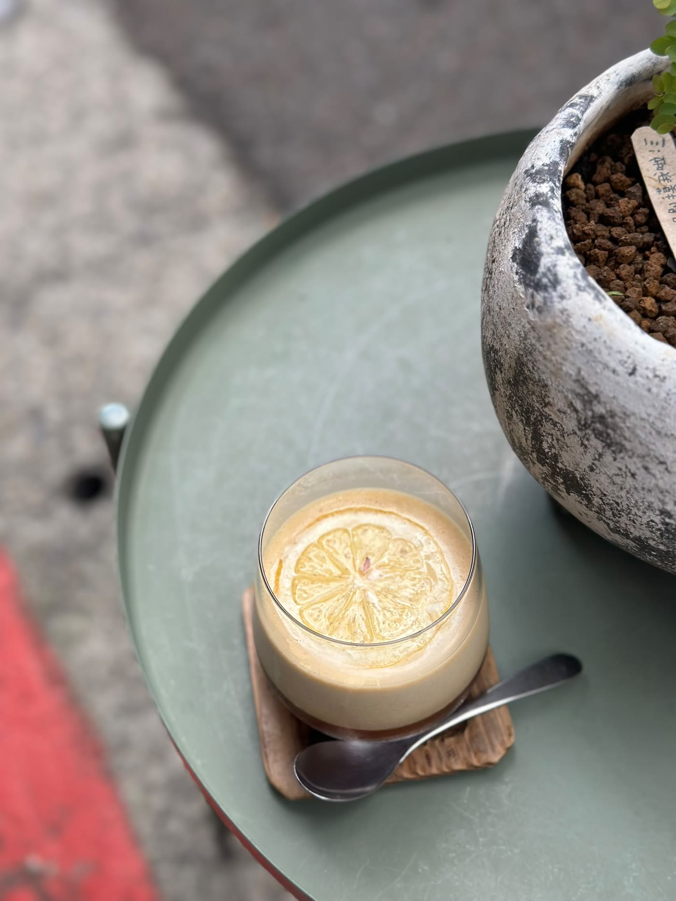
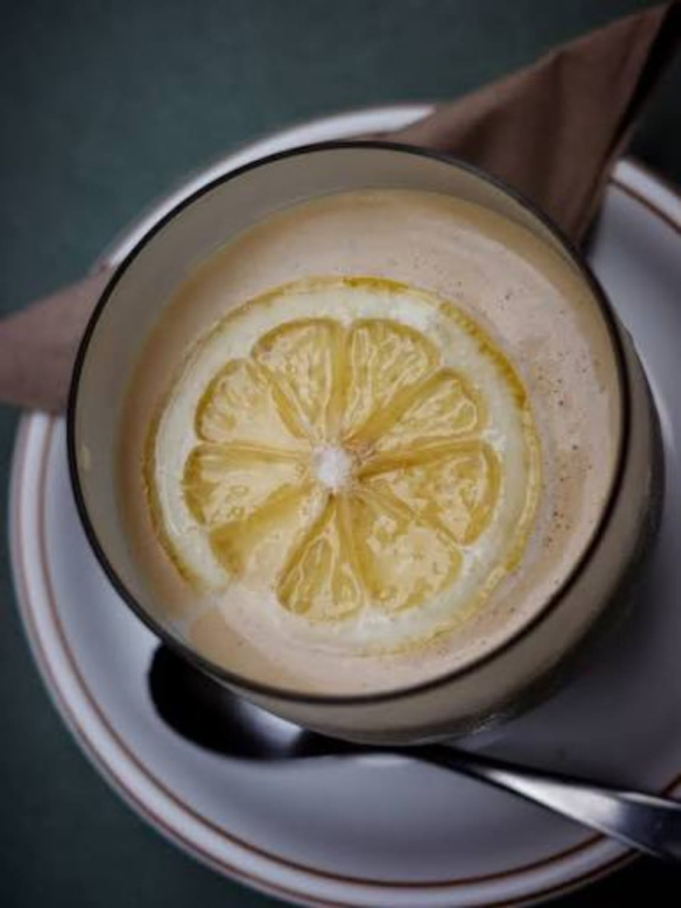
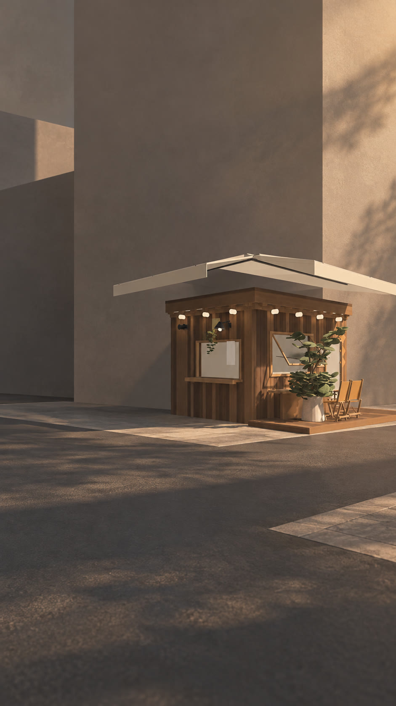

<title>中山街角檸檬冰咖啡</title>
<meta name="claude:viewport-fit-sides" content="cover">
<meta name="description" content="台北中山街角的一間木屋，只賣一杯：冰、一片檸檬、輕輕倒入的咖啡。">
<link rel="preconnect" href="https://fonts.googleapis.com">
<link rel="preconnect" href="https://fonts.gstatic.com" crossorigin>
<link rel="stylesheet" href="https://fonts.googleapis.com/css2?family=Noto+Sans+TC:wght@400;500&family=Noto+Serif+TC:wght@600;900&display=swap">
<style>
  /* Layout: one photo-led column of scenes; the middle of the page is a pinned stage where scrolling pours the cup. */
  :root {
    --ground: #eeece5;      /* washed stone of the street */
    --ink: #1c231f;         /* green-black */
    --ink-soft: #4d5751;
    --table: #4b5e52;       /* the round iron table */
    --table-deep: #232c27;
    --on-table: #eef0e8;
    --lemon: #e3c13f;       /* the one accent */
    --display: "Noto Serif TC", "Songti TC", "PMingLiU", serif;
    --text: "Noto Sans TC", "PingFang TC", "Microsoft JhengHei", sans-serif;
    --gutter: clamp(16px, 4vw, 48px);
    --gap: clamp(96px, 14vw, 200px);
    color-scheme: light;
  }
  * { box-sizing: border-box; }
  body { margin: 0; background: var(--ground); color: var(--ink); font: 400 17px/1.6 var(--text); }
  img { max-width: 100%; display: block; }
  .hero > *, .seats > *, .pour-stage > *, .plain > *, .visit > * { min-width: 0; }
  a { color: inherit; }
  :focus-visible { outline: 3px solid var(--lemon); outline-offset: 3px; }
  h1, h2 { font-family: var(--display); font-weight: 900; letter-spacing: -0.02em; line-height: 1.08; margin: 0; text-wrap: balance; }
  h1 { font-size: clamp(44px, 8.4vw, 128px); }
  h2 { font-size: clamp(34px, 5.2vw, 76px); }
  p { margin: 0; max-width: 34em; }
  .lead { font-size: clamp(18px, 1.6vw, 22px); line-height: 1.6; }
  .wrap { padding-left: max(var(--gutter), env(safe-area-inset-left, 0px)); padding-right: max(var(--gutter), env(safe-area-inset-right, 0px)); }

  /* Bar */
  .bar { display: flex; align-items: center; justify-content: space-between; gap: 24px; padding-block: 20px; }
  .mark { font: 600 20px/1 var(--display); text-decoration: none; }
  .bar nav { display: flex; gap: clamp(14px, 2.4vw, 32px); font-size: 16px; }
  .bar nav a { text-decoration: none; padding-block: 6px; }
  .bar nav a:hover { text-decoration: underline; text-underline-offset: 6px; }

  .btn { display: inline-block; background: var(--lemon); color: var(--ink); text-decoration: none; font-weight: 500;
         padding: 16px 26px; border-radius: 0; transition: transform .2s ease, background-color .2s ease; }
  .btn:hover { background: #edcf55; transform: translateY(-2px); }
  .btn:active { transform: translateY(1px); }

  /* Hero */
  .hero { display: grid; grid-template-columns: 5fr 7fr; gap: clamp(24px, 4vw, 64px); align-items: end; padding-block: 24px var(--gap); }
  .hero-copy { display: grid; gap: 36px; align-content: end; padding-bottom: 8px; min-width: 0; }
  .hero-en { font: 500 16px/1.4 var(--text); color: var(--ink-soft); margin-top: 14px; }
  .hero-pic { overflow: hidden; aspect-ratio: 4 / 5; max-height: 82svh; width: 100%; }
  .hero-pic img { width: 100%; height: 100%; object-fit: cover; object-position: 50% 45%; transform-origin: 50% 70%; will-change: transform; }

  /* Seats */
  .seats { display: grid; grid-template-columns: 7fr 5fr; gap: clamp(24px, 4vw, 64px); padding-block: 0 var(--gap); align-items: start; }
  .seats-pic { aspect-ratio: 3 / 4; overflow: hidden; }
  .seats-pic img { width: 100%; height: 100%; object-fit: cover; object-position: 60% 70%; }
  .seats-side { display: grid; gap: 28px; min-width: 0; }
  .seats-side figure { margin: 24px 0 0; }
  .seats-side figure img { aspect-ratio: 4 / 5; width: 100%; object-fit: cover; object-position: 50% 40%; }
  figcaption { font-size: 15px; color: var(--ink-soft); margin-top: 10px; }

  /* Pour: pinned stage */
  .pour { background: var(--table-deep); color: var(--on-table); }
  .pour-head { padding-block: var(--gap) 48px; display: grid; gap: 20px; }
  .pour-head p { color: #c9d0c6; }
  .pour-track { position: relative; }
  .pour-stage { display: grid; grid-template-columns: 5fr 7fr; gap: clamp(24px, 4vw, 64px); align-items: center; padding-block: 0 var(--gap); }
  .steps { list-style: none; margin: 0; padding: 0; display: grid; gap: 22px; counter-reset: none; }
  .steps li { font: 600 clamp(22px, 2.4vw, 34px)/1.3 var(--display); transition: color .35s ease, transform .35s ease; }
  .steps li small { display: block; font: 400 16px/1.5 var(--text); margin-top: 6px; color: #c9d0c6; }
  .frame { position: relative; aspect-ratio: 4 / 5; height: min(84svh, 900px); max-width: 100%; justify-self: center; overflow: hidden; background: #111; }
  .frame canvas, .frame .layer { position: absolute; inset: 0; width: 100%; height: 100%; }
  .frame .layer { object-fit: cover; opacity: 0; will-change: opacity, transform; }
  .frame .poster { opacity: 1; }
  .frame canvas { display: none; transform-origin: 55.6% 43.8%; will-change: transform; }
  .meter { position: absolute; left: 0; bottom: 0; height: 4px; width: 100%; background: var(--lemon); transform: scaleX(0); transform-origin: 0 50%; display: none; }

  html.live .pour-track { height: 560svh; }
  html.live .pour-stage { position: sticky; top: 0; height: 100svh; padding-block: 4svh; }
  html.live .frame canvas, html.live .meter { display: block; }
  html.live .frame .poster { opacity: 0; }
  html.live .steps li { color: rgba(238, 240, 232, .32); }
  html.live .steps li small { color: rgba(201, 208, 198, .32); }
  html.live .steps li.on { color: var(--on-table); transform: translateX(10px); }
  html.live .steps li.on small { color: #c9d0c6; }

  /* No foam */
  .plain { display: grid; grid-template-columns: 6fr 6fr; gap: clamp(24px, 4vw, 64px); align-items: center; padding-block: var(--gap); background: var(--table); color: var(--on-table); }
  .plain img { width: 100%; aspect-ratio: 1; object-fit: cover; object-position: 50% 48%; }
  .plain-copy { display: grid; gap: 28px; min-width: 0; }

  /* Visit */
  .visit { display: grid; grid-template-columns: 5fr 7fr; gap: clamp(24px, 4vw, 64px); padding-block: var(--gap); align-items: start; }
  .visit-copy { display: grid; gap: 32px; min-width: 0; }
  .facts { display: grid; grid-template-columns: auto 1fr; gap: 14px 28px; margin: 0; font-size: 18px; }
  .facts dt { font-weight: 500; color: var(--ink-soft); }
  .facts dd { margin: 0; }
  .visit img { width: 100%; aspect-ratio: 4 / 5; object-fit: cover; object-position: 55% 55%; }

  footer { padding-block: 0 48px; display: grid; gap: 24px; }
  .big { font: 900 clamp(48px, 11.5vw, 190px)/0.95 var(--display); letter-spacing: -0.04em; margin: 0; }
  .credit { font-size: 14px; color: var(--ink-soft); max-width: 60em; }

  /* Entrances: only for things below the first screen, and only once script runs. */
  html.live [data-rise].wait { opacity: 0; transform: translateY(26px); }
  [data-rise] { transition: opacity .7s cubic-bezier(.2,.7,.2,1), transform .7s cubic-bezier(.2,.7,.2,1); }

  @media (max-width: 820px) {
    body { font-size: 16px; }
    .bar nav a:nth-child(3) { display: none; }
    .bar nav { gap: 14px; font-size: 15px; }
    .mark { font-size: 18px; }
    .hero, .seats, .plain, .visit { grid-template-columns: 1fr; }
    .hero-pic { order: -1; aspect-ratio: 4 / 5; max-height: none; }
    .hero { padding-top: 8px; }
    .seats-side figure { display: none; }
    .pour-stage { grid-template-columns: 1fr; align-content: start; }
    html.live .pour-stage { padding-block: 2svh; gap: 14px; }
    .frame { aspect-ratio: 9 / 16; height: min(66svh, 720px); order: -1; }
    html.live .steps { position: relative; min-height: 6.2em; }
    html.live .steps li { position: absolute; inset: 0 auto auto 0; opacity: 0; transform: translateY(10px); }
    html.live .steps li.on { opacity: 1; transform: none; }
    .steps li { font-size: 24px; }
    .plain img { order: -1; }
  }
  @media (prefers-reduced-motion: reduce) {
    [data-rise], .btn, .steps li { transition: none; }
  }
</style>

<header class="bar wrap">
  <a class="mark" href="#top">中山街角木屋</a>
  <nav aria-label="頁面">
    <a href="#pour">一杯怎麼做</a>
    <a href="#seats">座位</a>
    <a href="#visit">在哪裡</a>
  </nav>
</header>

<main id="top">
  <section class="hero wrap">
    <div class="hero-copy">
      <div>
        <h1>一杯檸檬冰咖啡</h1>
        <p class="hero-en">Iced coffee, one slice of lemon. Zhongshan, Taipei.</p>
      </div>
      <p class="lead">台北中山街角的一間木屋。兩張長木椅、一張圓鐵桌，只賣這一杯：冰、一片檸檬、輕輕倒入的咖啡。</p>
      <p><a class="btn" href="#pour">往下滑，倒一杯</a></p>
    </div>
    <div class="hero-pic"></div>
  </section>

  <section class="seats wrap" id="seats" aria-labelledby="seats-h">
    <div class="seats-pic" data-rise></div>
    <div class="seats-side">
      <h2 id="seats-h" data-rise>兩張長木椅，一張圓鐵桌。</h2>
      <p class="lead" data-rise>座位就在門口。坐下來，綠色的圓鐵桌剛好放得下一杯。</p>
      <figure data-rise>
        
        <figcaption>門口的圓鐵桌。</figcaption>
      </figure>
    </div>
  </section>

  <section class="pour" id="pour" aria-labelledby="pour-h">
    <div class="pour-head wrap">
      <h2 id="pour-h">一杯怎麼做</h2>
      <p class="lead">往下滑，跟著次序倒一杯。</p>
    </div>
    <div class="pour-track" id="track">
      <div class="pour-stage wrap">
        <ol class="steps" id="steps">
          <li data-at="0">先放冰。<small>杯子裝滿冰塊。</small></li>
          <li data-at="0.05">再放一片檸檬。<small>貼著杯壁，壓在冰上。</small></li>
          <li data-at="0.12">咖啡，輕輕倒入。<small>慢慢倒，讓咖啡從冰縫流下去。</small></li>
          <li data-at="0.64">從上面看。<small>冰、檸檬、咖啡。沒有奶泡。</small></li>
          <li data-at="0.88">就是這一杯。<small>放在門口的圓鐵桌上。</small></li>
        </ol>
        <div class="frame" aria-hidden="true">
          
          <canvas id="cv"></canvas>
          
          
          <div class="meter" id="meter"></div>
        </div>
      </div>
    </div>
  </section>

  <section class="plain wrap" aria-labelledby="plain-h">
    <div class="plain-copy">
      <h2 id="plain-h" data-rise>沒有奶泡。</h2>
      <p class="lead" data-rise>只有冰、一片檸檬和咖啡。檸檬在最上面，第一口先聞到。</p>
    </div>
    
  </section>

  <section class="visit wrap" id="visit" aria-labelledby="visit-h">
    <div class="visit-copy">
      <h2 id="visit-h" data-rise>在中山街角。</h2>
      <p class="lead" data-rise>找那間木屋：窗口、門口兩張長木椅，和一張綠色的圓鐵桌。</p>
      <dl class="facts" data-rise>
        <dt>地點</dt><dd>台北市中山區，街角木屋</dd>
        <dt>座位</dt><dd>兩張長木椅、一張圓鐵桌</dd>
        <dt>菜單</dt><dd>檸檬冰咖啡，只有這一杯</dd>
      </dl>
    </div>
    
  </section>
</main>

<footer class="wrap">
  <p class="big">中山街角木屋</p>
  <p class="credit">倒咖啡的畫面是 AI 生成的示意影片；街角木屋全景是 3D 示意圖；其餘是店的實景照片。</p>
</footer>

<script>
(function () {
  var reduce = window.matchMedia('(prefers-reduced-motion: reduce)').matches;
  var root = document.documentElement;
  var clamp = function (v, a, b) { return Math.min(b, Math.max(a, v)); };
  var prog = function (v, a, b) { return clamp((v - a) / (b - a), 0, 1); };
  var ease = function (p) { return p < .5 ? 4 * p * p * p : 1 - Math.pow(-2 * p + 2, 3) / 2; };

  // Entrances: hide only what is below the first screen, reveal once as it arrives.
  var risers = [].slice.call(document.querySelectorAll('[data-rise]'));
  if (!reduce && 'IntersectionObserver' in window) {
    root.classList.add('live');
    var io = new IntersectionObserver(function (es) {
      es.forEach(function (e) {
        if (!e.isIntersecting) return;
        var el = e.target, sibs = [].slice.call(el.parentNode.querySelectorAll(':scope > [data-rise]'));
        setTimeout(function () { el.classList.remove('wait'); }, Math.max(0, sibs.indexOf(el)) * 80);
        io.unobserve(el);
      });
    }, { rootMargin: '0px 0px -8% 0px' });
    risers.forEach(function (el) {
      if (el.getBoundingClientRect().top > innerHeight) { el.classList.add('wait'); io.observe(el); }
    });
  }
  if (reduce) return; // Reduced motion: the pour section stays a still picture with all steps readable.
  root.classList.add('live');

  // The pour: 146 frames scrubbed by scroll, then the top view, then the real cup.
  var N = 146, frames = new Array(N), loaded = new Array(N);
  var cv = document.getElementById('cv'), ctx = cv.getContext('2d');
  var track = document.getElementById('track'), meter = document.getElementById('meter');
  var topView = document.getElementById('topView'), realCup = document.getElementById('realCup');
  var steps = [].slice.call(document.querySelectorAll('#steps li'));
  var heroImg = document.getElementById('heroImg');
  var current = -1, ticking = false;

  function src(i) { return 'seq/' + String(i + 1).padStart(3, '0') + '.jpg'; }
  function load(i) {
    var im = new Image();
    im.onload = function () { loaded[i] = true; if (i === 0 || Math.abs(i - current) < 3) { current = -1; tick(); } };
    im.src = src(i); frames[i] = im;
  }
  load(0);
  for (var i = 1; i < N; i++) load(i);

  function size() {
    var r = cv.getBoundingClientRect(), d = Math.min(window.devicePixelRatio || 1, 2);
    cv.width = Math.round(r.width * d); cv.height = Math.round(r.height * d); current = -1;
  }
  function draw(i) {
    var j = i;
    while (j > 0 && !loaded[j]) j--;
    if (!loaded[j]) return;
    if (j === current) return;
    var im = frames[j], s = Math.max(cv.width / im.naturalWidth, cv.height / im.naturalHeight);
    var w = im.naturalWidth * s, h = im.naturalHeight * s;
    ctx.drawImage(im, (cv.width - w) / 2, (cv.height - h) / 2, w, h);
    current = j;
  }
  function frame() {
    ticking = false;
    var r = track.getBoundingClientRect();
    var p = clamp(-r.top / (r.height - innerHeight), 0, 1);
    var f = p < 0.10 ? (p / 0.10) * 48 : 48 + prog(p, 0.10, 0.60) * 97;
    draw(Math.round(f));
    var z = ease(prog(p, 0.60, 0.70));
    cv.style.transform = 'scale(' + (1 + 1.6 * z) + ')';
    var tv = prog(p, 0.65, 0.71) * (1 - prog(p, 0.86, 0.92)), tp = prog(p, 0.65, 0.88);
    topView.style.opacity = tv;
    topView.style.transform = 'scale(' + (1.28 - 0.2 * tp) + ') rotate(' + (3 - 3 * tp) + 'deg)';
    var rc = prog(p, 0.86, 0.92);
    realCup.style.opacity = rc;
    realCup.style.transform = 'scale(' + (1.08 - 0.08 * prog(p, 0.86, 1)) + ')';
    meter.style.transform = 'scaleX(' + p + ')';
    var on = 0;
    steps.forEach(function (li, k) { if (p >= parseFloat(li.dataset.at)) on = k; });
    steps.forEach(function (li, k) { li.classList.toggle('on', k === on); });
    var hp = clamp(scrollY / innerHeight, 0, 1);
    heroImg.style.transform = 'scale(' + (1.06 - 0.06 * hp) + ')';
  }
  function tick() { if (!ticking) { ticking = true; requestAnimationFrame(frame); } }
  addEventListener('scroll', tick, { passive: true });
  addEventListener('resize', function () { size(); tick(); });
  size(); tick();
})();
</script>
